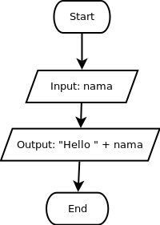

Untuk dilakukan:
Susunlah blok program sehingga sesuai dengan flowchart di bawah ini, kemudian tekan tombol evaluate:

Dikarenakan variable adalah penampung data, maka operasi-operasi seperti concatenation, operasi aritmetik, operasi perbandingan, negasi, dan operasi boolean lainnya akan dapat pula dilakukan pada variable (tergantung dari tipe data yang ditampung).